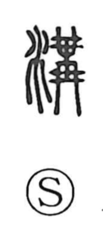

溝

Uncategorized
Kun: mizo | On: kou
ditch ・ channel
Explanation
A phonetic–semantic compound formed with the water radical and the element 冓 as phonetic, read kō. 冓 originally depicts strings of identical ornaments tied together above and below—an image of binding and joining that also underlies words like 婚媾 (marriage). Applied to water, this sense of connecting gives 溝 the meaning of cutting and opening channels that link streams, hence an artificial ditch for irrigation. In ritual contexts, such ditches could encircle imperial mausolea to mark off the sacred precinct, and valleys themselves were viewed as natural ditches, referred to as 溝壑.